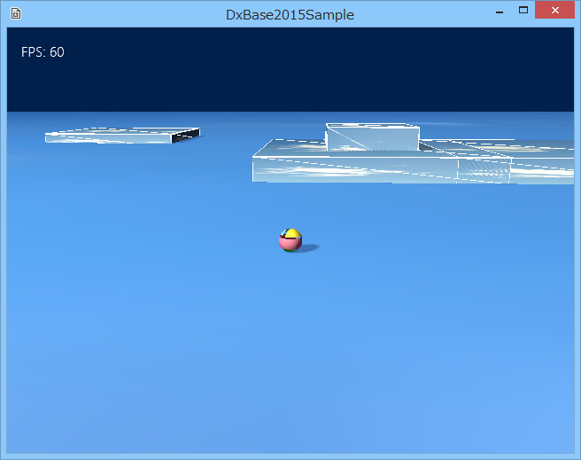
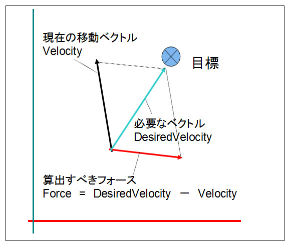

０．チュートリアル
００７．ステアリングを使用したプレイヤー
速度の自動計算
前項では、速度を計算して、Rigidbodyコンポーネントのパラメータ速度を調整する方法でプレイヤーの動きを実装しました。今回は、ステアリングというコンポーネントを使って、速度を調整します。
Tutorial007ディレクトリのソリューションを開くと以下のような画面になります。
内容は前項とほとんど同じですが、プレイヤーを動かしてみると、前項とは違った感触が得られると思います。
どこが違うというと、なんとなく思った方向にきびきび動かないということです。
これは、速度を計算するのに、ステアリングというコンポーネントを利用しているからです。
ステアリングは直訳すると操舵ですが、このコンポーネントは現実社会のように、何かの速度を変更したり、止めたりするのに加速を使用しています。

図0007a
速度（Velocity）は加速を加えることで増減します。動いているのが止まるのも、実は後ろ向きの加速が加わっています。ですから、加速を動的に変えることができれば速度（Velocity）を動的に変更できます。
では加速を変化させるのにはどうしたらいいかというと、まず、いわゆる力（フォース）を作り出します。たとえば何かを追いかけるとすれば、追いかけようとするフォースがありますし、目的地に到着するとすれば到着しようとするフォース（ブレーキのようなもの）が発生します。あるルートパスがあってそれに沿って進むとすれば、その道筋に沿うようなフォースが発生します。複数のオブジェクトがお互いに引き合うフォースもありますし、お互いに離れようとするフォースがあります。
これらの一つ一つのフォースを作り出す仕組みがステアリング（操舵）ということになります。
そして、それらのフォースを加算していって、最終的にその物体に影響するフォースを作り出します。
全体的なフォースを求めましたら、物質によって質量が違いますので、質量を加味して加速に変換します。重いものに加速を加えるのには多くの力が必要ですし、軽いものであれば少なく済みます。それを計算するのです。
そして各物質に対する、一瞬一瞬の加速が出せましたら、その加速を使って、現在の速度（Velocity）を変化させます。
さて、今回、プレイヤーの場合具体的にはどのようなフォースを発生させて、加速を計算してるのかというと、Seekというステアリング（操舵）を使ってフォースを発生させ、Rigidbodyを使って加速を計算します。
前項でも以下の図は説明しましたが、プレイヤーとコントローラの関係は以下のような関係になります。

図0006b
赤い線がプレイヤーの目的の方向です。
前項では。この方向を加算していましたが、今回は別の方法を使ってます。
フォースの向きは、以下のようになります。

図0007b
つまり、目的地へのベクトルから現在の速度を引いたベクトルが、求めるべきフォースとなります。
カメラと自分の向きから、向いたいベクトルは算出できますので、そこに向かうフォースはSeekというステアリング（操舵）を使って算出します。
Seekステアリング（操舵）は、コンポーネントとして実装します。
コンポーネントの実装は、前項のようにPlayer::Create()に記述します。
ここでは、Rigidbody、SeekSteeringのほかに重力を加味するので、Gravityコンポーネントも追加しています。